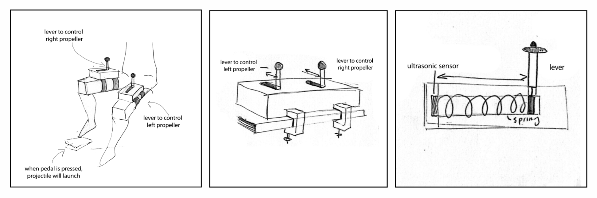
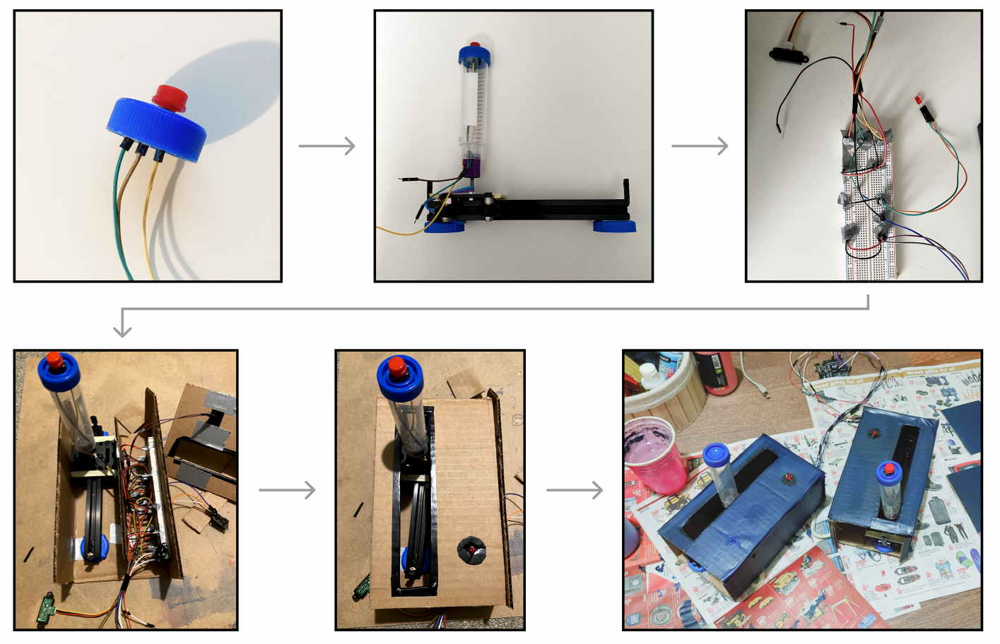

Team
Emma Souannhaphanh
My Role
Controller Builder
Co-programmer
UI Designer
Tools
C++
OpenFrameworks
Arduino
Figma
Timeline
4 weeks (Fall 2023)
OVERVIEW
Concept
This project was completed as a group project for a sensor interactions class. The task was to build an alternative controller using Arduino and develop a game for it in OpenFrameworks. We came up with a space game featuring two wearable controllers strapped onto players' thighs. The controllers determine the speed and angle of the spaceship inside the game. They also contain physical feedback such as LEDs and vibration motors. The game itself is an endless 2D runner style game where the player collects stars and avoids rocks.
VIDEO
Demo
DEFINE
A controller with a simple mechanic
At the start, brainstorming ideas was a bit tricky, so we checked out other alternative controllers for inspiration. What stood out to us was that the ones we liked had a simple, satisfying mechanic resembling a real-world action. We decided to build our controller around this concept especially considering our limited time frame.
IDEATE
Visualising the concept
We decided to centre our controller around a single mechanic: moving a lever forward and backward. This choice is all about immersing players in the game, giving them that machinery feel as if they're actually controlling a spaceship. We also added in button pressing for launching projectiles at rocks. I then created some sketches to better visualise our ideas.

PROTOTYPING
Would the idea actually work?
We were a bit worried about the practicality of wearable controllers, thinking they might move around too much while players operated the levers. To put our concerns to the test, I made a simple prototype using some cardboard and other household items to test out the movement of the controller. We had several users try it on and move the lever. To our relief, the movement worked smoothly, and the controller stayed put on the players' thighs.

DESIGN
1. Building the controller
We started off with building the controller by setting up the wiring for the Arduino and enclosing it in a cardboard box. We used two IR sensors, two LED’s, and two vibration motors. We also connected the Arduino to Firmata in OpenFrameworks to test the sensors and filter out any noise.

2. Programming the game
As we were building the controller, we also programmed the game at the same time. We programmed the basic movement of the spaceship, projectile shooting, and star collection.
3. Connecting the controller to the game
Once the controller was done, it was time to connect it to the game. We implemented the Firmata code that we used for testing the controller with the game code.

GAMEPLAY
Move left lever to angle spaceship to the left
By moving the left lever, the spaceship will angle to the left and its speed will also increase.
Move right lever to angle spaceship to the right
By moving the right lever, the spaceship will angle to the right and its speed will also increase.
Collect stars
Collect as many stars as you can to gain points!

Shoot and avoid rocks
Avoid rocks or shoot any rocks in your path by pressing the button.
REFLECTION
Takeaways
Wiring is painful. The main challenge I faced in building the controller was with the wiring. With multiple sensors and components, there were a bunch of wires involved. Occasionally, the wires would come undone, especially when the controller was moved.
It was nice implementing haptic feedback. My favourite part about the controller was implementing the haptic feedback through vibration. It was fun to come up with ways of how we could immerse the players in our game.
Inspired to explore more Arduino. I really enjoyed exploring how the physical world can be connected to the virtual world. It was also nice to see what can be done with Arduino. I’m now inspired to tackle Arduino projects in my personal time!
Next Steps
Go wireless. Since I struggled a bit with wires with this project, I've decided that for future projects involving movement and numerous components, I want to try wireless solutions. Exploring things like PCB layouts and other wireless options seems more efficient and less tangled up.